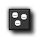
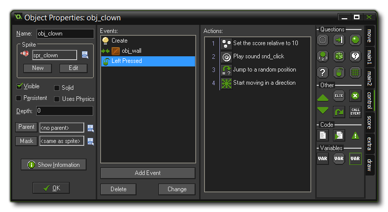

Tutorial
Page 9 of 15
The Mouse Event
Finally we need to define what to do when the user clicks with the left mouse button when the cursor is over the clown. We are going to add four actions here...
First of the actions that we will add to the event is to add 10 points to the score. This is easy as GameMaker has a built in variable that can automatically keep a score for you. The next action we want to
play the click sound, and then, after this, we will jump the clown to a random position, setting a new random direction of motion with a slightly increased speed. Finally, the last two actions are added to gradually
increase the difficulty of the game.
The following steps explain how to create the mouse event that we require:
- Press the Add Event button. In the Event Selector click on the Mouse Event and in the sub-menu that appears select Left Pressed. This event happens when the user
presses the left mouse button while the mouse cursor is on top of the instance and will only be triggered once for each press. Note that, like collisions, a normal mouse event will only be triggered
when the cursor is considered to be touching the collision mask of the instance, so if the instance has no sprite assigned, this event will not trigger!
- From the tab labelled Score include the Set Score action.

- As new score indicate a value of 10 and also click on the box next to the property Relative to enable it. When Relative is enabled the value is added to the current score, otherwise the
score would be replaced by the value.
- From the tab Main1 include a Play Soundaction and for the sound indicate "snd_click". Leave Loop as false.

- From the Move tab, include a Jump to Random action, which places the instance in a random, collision-free position. The parameters can be left unchanged for this action.
- Finally we include a Move Fixed action.
- Again select all eight arrows (and not the centre square) and for the speed indicate a value of 0.5 and enable the Relative property to add 0.5 to the current speed. If you don't flag the
"relative" box, then the speed will be set to 0.5 (and if you keep relative ticked and use -0.5, the speed will decrease by the given amount).
That is all the actions we need for the Mouse Event and the finished event list should look like this:

We are now finished with the clown object. We have included actions for the three events that are important, so press the OK button to close the Object Properties window and get ready to actually see your game come to
life as we create a room and place some instances into it!
© Copyright YoYo Games Ltd. 2015 All Rights Reserved